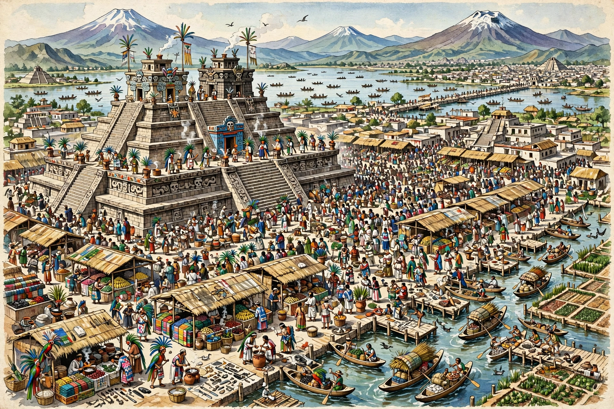

Mexico-Tlatelolco was a pre-Columbian altepetl (city-state) on an island in Lake Texcoco in the Valley of Mexico, founded around 1337/1338 by a dissident group of Mexica who split from Tenochtitlan. It became famous for its great market, described by Hernán Cortés and Bernal Díaz as drawing tens of thousands of traders daily.

Tlatelolco maintained its own dynasty and temples until 1473, when Tenochtitlan's tlatoani Axayacatl conquered it after the so-called Tlatelolco War. During the Spanish conquest it was the site of the Mexica's last stand, where Cuauhtémoc was captured in August 1521. In the colonial and modern eras the site became Santiago Tlatelolco; its Plaza de las Tres Culturas was the scene of the 1968 Tlatelolco massacre of student protesters.